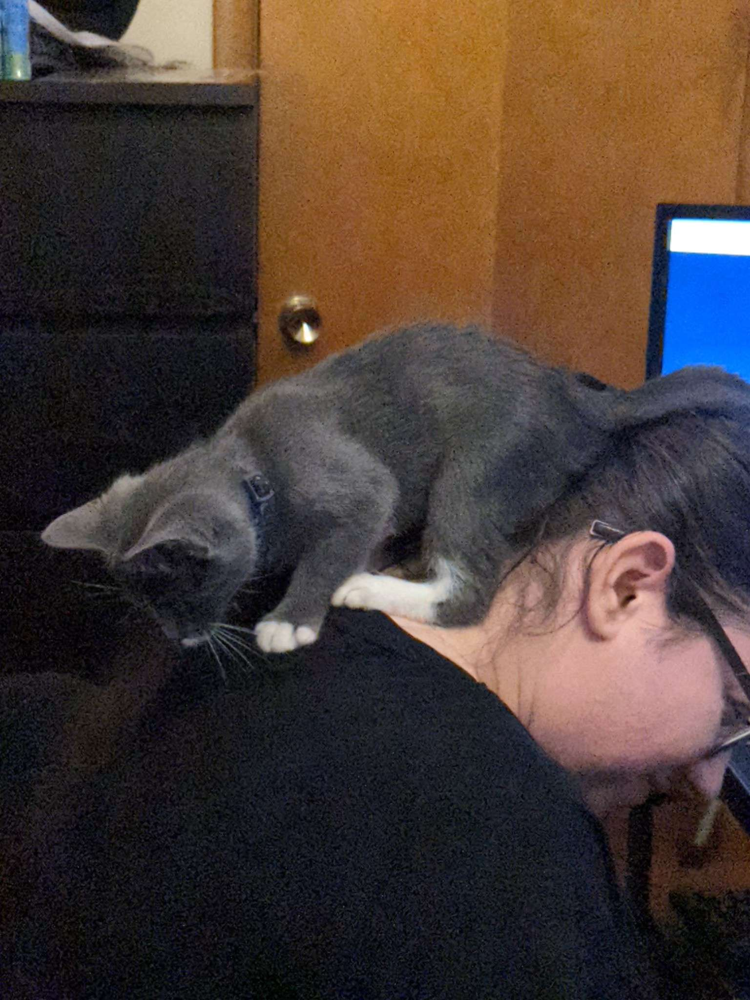

My Resume
Courtney Fleischer
Highly-motivated individual with experience working in challenging environments. Proven ability to stay calm under pressure and manage difficult situations. Seeking new opportunities to expand my skills and contribute to the success of the business.

Work Experience
Amazon
Aviation Security
- Admin responsible for keeping and maintaining a secure area for loading air cargo.
- scorting individuals into operational areas when necessary.
- Area auditing for safety & access control.
Ship Dock
- Learning Ambassador to teach and inspire new recruits and coworkers!
- Dwell Chaser ensuring customer packages get to the correct truck on time.
- Assisting Ship Clerk with seals for trucks.
- Doing audits every CPT.
- Lead PA to assign staffing/moves & keep work flow smooth.
- Ship Clerk responsible for all trucks leaving the dock.
The Elenor Nursing Care Center
Activity Aide
- I would teleport the residents away from the nursing home and into somewhere fun doing (just about) anything they wanted!
We danced, played sports and games, sang to karaoke with or without the machine, wrote poems and songs, did messy art that we hung all over the building, word games, charades, fundraisers, baking, cooking, trivia -- You name it and we did it!
Housekeeper
- Cleaned resident rooms daily while conversing with them.
- Ensured residents had what they needed and that it was clean.
Dietary Aide
- Prepared food for residents and ensured their items were correct.
- Made accommodations for any dietary changes.
- Cleaned kitchen and dishes making sure things were left sanitary.
Skills
- Customer Service
- Basic Computer Skills
- Time Management
- Team Building
- Auditing
- Strong Interpersonal Communication
- Detail Oriented
- Security
- Motivated/ Flexible
Education
- Surge2IT Graduate
- High School Graduate
Other